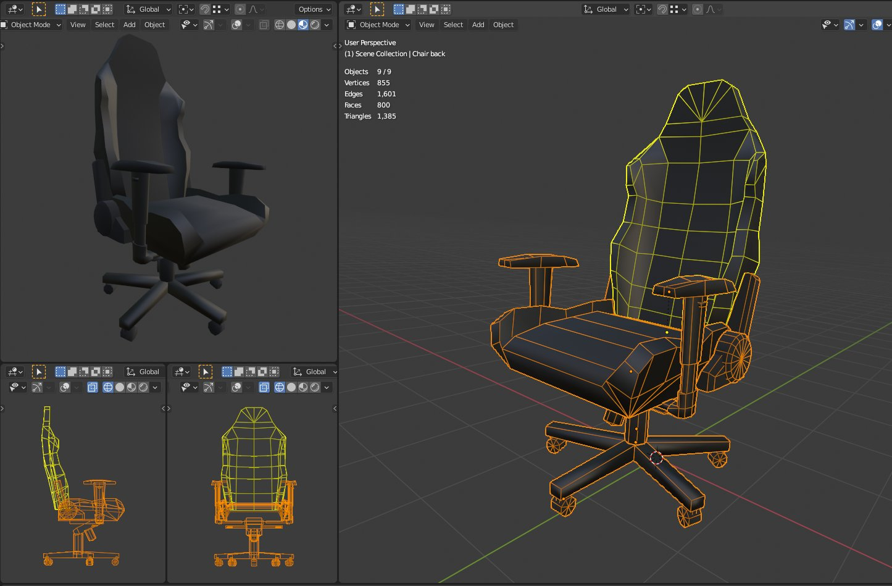
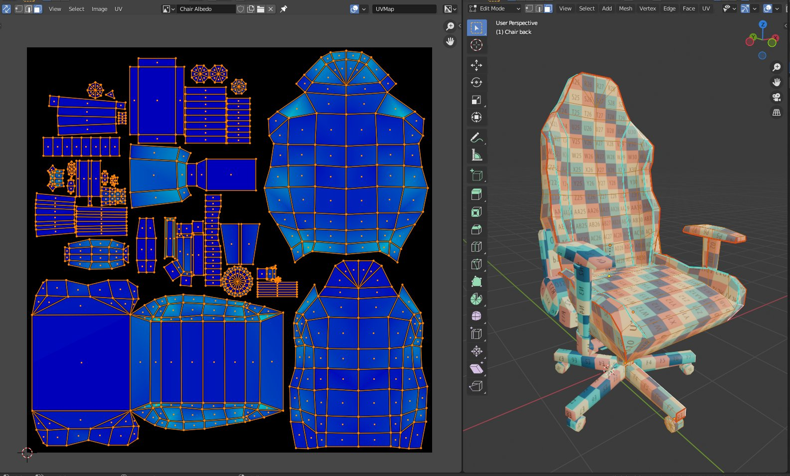
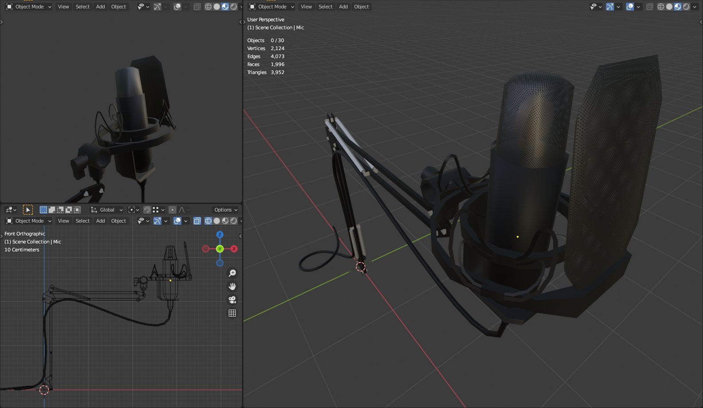
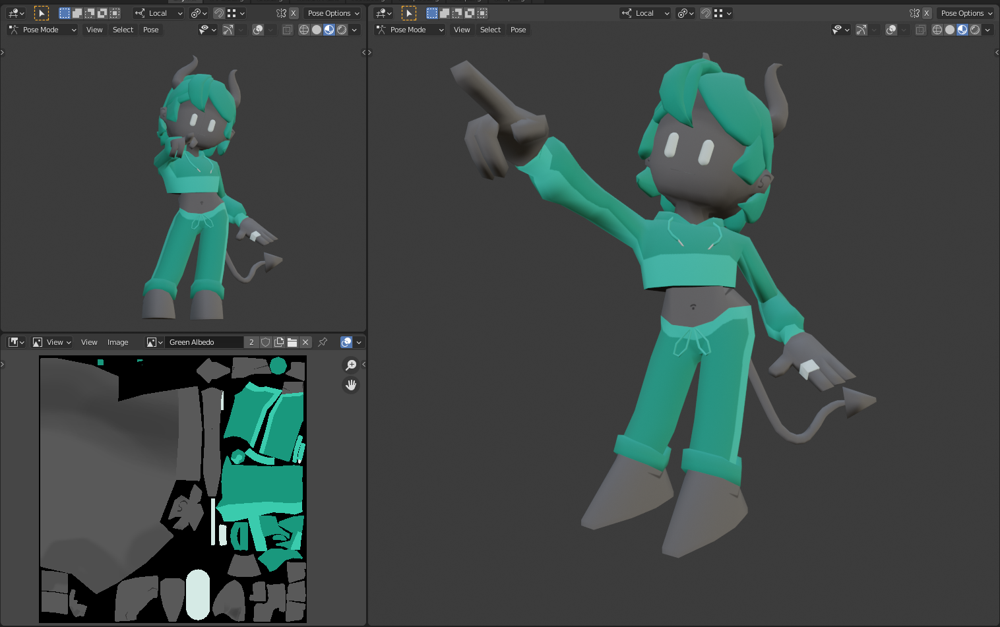
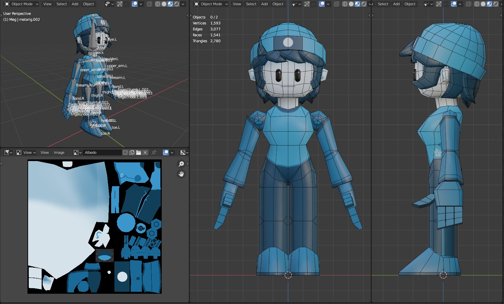

A chaotic, infinite, AI generated factory!
Factory Factory is powered by ChatGPT and runs in
Unity.
It streams live on Twitch 5 days a week.
Twitch
A graphical moveset editor for Nickelodeon All-Star Brawl.
This project allowed the community to view, edit, and
export custom movesets for characters in NASB!
Built
with C# as a custom Unity Editor window, it runs in the
Unity Editor.
GitHub
A mod for Nickelodeon All-Star Brawl that allows anyone to
load custom music into each stage in the game.
Designed to be easy to use, and includes thorough
documentation.
Built as a BepInEx plugin using C#.
GitHub
|
Thunderstore.io
A small Unity game I made as a one week challenge project. I
wrote all of the C# code for this project, and made all of
the assets in Blender and Clip Studio Paint.
itch.io
THE BEAT COP (TBC) is a free drum machine made in Pure Data
Vanilla 0.48 and released under the GNU GPLv3 license.
GitHub
  


A cute ChipTune inspired song I made while experimenting with the 3/4 time signature.
My friend Ivanmz made the incredible animation to go along with it!